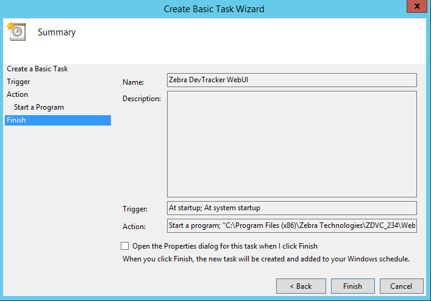
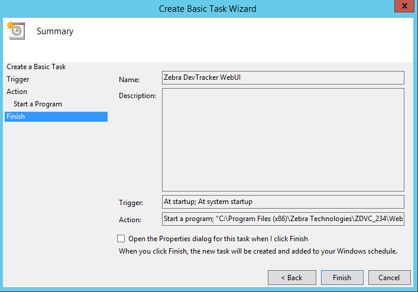

Overview
As part of Zebra DNA Visibility Console (ZDVC) server, Device Tracker runs on a supported Windows-based server. Device Tracker client runs on supported Zebra devices. This section provides system requirements and instructions for install and setup for the solution.
Solution components:
- ZDVC server - ZDVC server includes Device Tracker and PowerPrecision Console. Device Tracker collects and processes device data for tracking misplaced devices.
- Web portal - ZDVC centralized dashboard for monitoring device presence, device tracking, and battery status.
- Device Tracker client - reports device presence status and information (such as remaining battery and charging status) to server
Before installing, ensure to prepare additional steps for system setup - consult your local IT department for assistance:
- Install SSL certificate (procured by a signed Certificate Authority) - configured on server for secure HTTPS communication
- Open specific incoming and outgoing ports - for server communication through the firewall, based on ports specified during server installation
- Add DNS (Domain Name Server) Entry - an entry is added to the DNS to map the server IP address to the domain
Important: An SSL Certificate is required from a third-party certificate authority (CA), such as Verisign or Thawte. Any self-signed certificate or one issued by a non third-party CA will not work. The .pfx certificate must contain the complete certificate chain, including intermediate certificates.
System Requirements
This section provides the server and device requirements. Device Tracker supports a maximum of 500 devices per installation.
Server Requirements
Windows Operating System supported:
- Windows® Server 2012, 64-bit processor
- Windows® Server 2016, 64-bit processor
Browsers supported (connect over https):
- Google Chrome Browser version 66 and higher
- Microsoft Internet Explorer version 11 and higher
- Microsoft Edge for Windows 10
- Safari for Mac version 11 and higher
Software Required (included in server installation):
- Java runtime
- Node.js version 6.11
- PostgreSQL 9.6.3-3 and higher
- Device Tracker software (server and client)
Network Access Requirements (see Server Setup below):
- If required, open incoming and outgoing ports for communication between server and mobile devices through the server firewall. Sample ports are:
- Backend Server Port: Port 8080 for Device Tracker client to register to the server and transmit device data
- UI Port: Web Portal Port 8443 for accessing Device Tracker web portal
- If required, perform DNS setup to add server IP address to the DNS server.
- If required, open incoming and outgoing ports for communication between server and mobile devices through the server firewall. Sample ports are:
Hardware Requirements:
- Minimum CPU cores: 16
- Minimum memory (RAM): 64 GB
- Minimum available hard drive space: 500 GB
Device Requirements
Requirements for Device Tracker client:
- The device is connected via WiFi on the same network as the server.
- Zebra Data Service agent is running on the device. This agent collects data from the device.
- The server URL, user name, and password is configured in the Device Tracker client to communicate with the server.
Supported Devices (including GMS and non-GMS versions):
| Device | Android 6.x (Marshmallow) |
Android 7.x (Nougat) |
Android 8.x (Oreo) |
|---|---|---|---|
| MC3300 | ● | ● | |
| PS20 | ● | ||
| TC51/TC51-HC/TC56 | ● | ● | ● |
| TC52/TC57 | ● | ||
| TC70X/TC75X | ● | ● | ● |
| TC72/TC77 | ● |
Server Install & Setup
Download ZDVC server from Zebra Support and Downloads. Install ZDVC server on the supported system that meets the specified requirements. After server installation, further network and certificate setup is required to allow communication between the server and devices via DNS and firewall. Instructions for server installation and setup:
Server Prerequisites
The following are the prerequisites required for the server:
DNS (Domain Name Server) Setup. ZDVC server runs in a domain, for example name.company.com. An entry with the hostname and corresponding IP address is required in the DNS server for name resolution. The DNS server and ZDVC server are required to be on the same network. Contact your local IT Administrator to configure the domain to IP address mapping.
SSL Certificate. ZDVC requires an SSL certificate for secure communications. The certificate must be in .pfx format and set with a password. See Server Certificate Procurement for details.
Open Inbound/Outbound Ports on the Firewall. The appropriate ports are required to be opened for inbound/outbound network traffic flow through the firewall for communication between the server and devices. The UI and Backend Server ports are specified during server install. The method to open the ports depends on the firewall software used by the network administrator.
- UI Port: inbound and outbound (e.g. port 8080)
- Backend Server Port: inbound (e.g. port 8443)
Server Certificate
An SSL certificate is needed for secure connections. Generate the CSR (Certificate Signing Request) with private key and submit it to the trusted CA. The CA issues the SSL Certificate signed with the public key (in .p7b format). Use this issued certificate to generate the SSL certificate with the private key. The final, complete SSL certificate contains the server certificate, any intermediate certificates, the public key and private key. The procedure to accomplish this is separated into two sections below:
- Procure server certificate (.p7b format) with public key
- Generate complete SSL certificate (.pfx format) with both public and private keys
If the server certificate with public key already exists, skip to the second section Generate complete SSL Certificate. If the complete SSL certificate already exists, skip to section Server Installation.
Procure server certificate: Create a private key and generate the CSR. Submit the CSR to the CA for signing. The server certificate issued should be in .p7b format.
- Download and install the SSL toolkit OpenSSL for Windows. Follow the instructions stated to download the file based on your Windows configuration.
- Add a new "openSSL" environment variable to the Windows system and set the value to the location where openSSL is installed (e.g. "C:\Program Files\OpenSSL-Win64\bin\").
- Create a folder named "ServerCert". Open the command prompt to this folder path.
- Create a private key. It prompts to enter the passphrase - make note of this passphrase, which is used in Device Tracker. Run the command:
openSSL genrsa -des3 -out dtrkdemo.key 2048
where "dtrkdemo.key" can be replaced with a custom file name. - Create a CSR based on the new private key. Run the command:
openSSL req key dtrkdemo.key -new -out dtrkdemo.csr
where "dtrkdemo.key" (same file name as in step 4) and "dtrkdemo.csr" (new file created) can be replaced with custom file names. It prompts to enter the private key password (created in step 5). Enter in the required fields when prompted (the information entered must match that registered with the CA):- Country Name - Enter the two-letter code without punctuation for country, for example: US or CA.
- State or Province - Enter the full state or province name without abbreviation, for example: California.
- Locality or City - Enter the city or town name without abbreviation, for example: Berkeley or Saint Louis.
- Organization Name - Enter the company. If the company or department contains a special character such as "&" or "@", the symbol must be spelled out or omitted in order to enroll successfully.
- Organizational Unit Name - Enter the name of the department or organization unit making the request. This is optional, to skip, press Enter on the keyboard.
- Common Name - Enter the fully qualified host name, for example: "dtrk.zebra.com". This is the same name to be used in the Server Installation in step 5 for the Domain name.
- Email Address - Enter the contact email address.
When prompted for the challenge password, it is not required - do not supply one.
- Submit the CSR created to the CA. They will supply a certificate in .p7b format, e.g. ssl_certificate.p7b.
Generate complete SSL Certificate: Zebra requires the certificate be procured in .p7b format and combined with the private key (.key file) to generate the SSL certificate in .pfx file format. If the certificate is in a different format, use an SSL certificate converter tool to convert to the proper format.
- Create an ssl_certificate.cer file with the command:
openssl pkcs7 -print_certs -in ssl_certificate.p7b -out ssl_certificate.cer
where "ssl_certificate.p7b" is the certificate issued by the CA. - Create SSL certificate "ssl_certificate.pfx" with command (using the private key password created from step 4 in the previous section):
openssl pkcs12 -export -in ssl_certificate.cer -inkey dtrkdemo.key -out ssl_certificate.pfx
where "dtrkdemo.key" is the private key generated from step 4 in the previous section and "ssl_certificate.cer" is the file generated from the previous step 1. - Import the SSL certificate on the server. Double-click the certificate on the local computer and follow the Certificate Import wizard.
- Use SSL certificate "ssl_certificate.pfx" and the private key password for Device Tracker server installation and setup in the sections that follow.
Server Installation
ZDVC Server Installation steps:
- Double-click on the .EXE to launch the installer.
- At the initial window, click Next.
 Figure 1. Installation - initial screen
Figure 1. Installation - initial screen - Accept the license agreement. Click Next.
 Figure 2. Installation - EULA
Figure 2. Installation - EULA - Accept the default folder or browse to the destination folder. Click Next.
 Figure 3. Installation - destination location
Figure 3. Installation - destination location - Enter in the server configurations, then click Next:
- Domain - domain name for server, e.g. "name.company.com"
- Server Certificate Path - location of server certificate (.pfx file)
- Server Certificate Password - password for server certificate
- UI port - designated UI port, can default to 8443
- Backend Server Port - designated server port, can default to 8080
 Figure 4. Installation - server configuration
Figure 4. Installation - server configuration
- Enter in server authentication and credentials, then click Next:
- Super admin and database password
- Server auth key
- Server auth password
Important: Use of the following special characters is not supported for the "Server auth key" and "Server auth password":
< (less than)
> (greater than)
& (ampersand)
' (single quote)
" (double quote)
 Figure 5. Installation - server authentication and credentials
Figure 5. Installation - server authentication and credentials
- Review settings. Click Next. Third party applications (such as Postgres and Node.js) will be installed if it does not pre-exist in the system.
 Figure 6. Installation - review settings
Figure 6. Installation - review settings - Installation complete. Click Finish.
 Figure 7. Installation - complete
Figure 7. Installation - complete
Server Setup
Steps for ZDVC server setup after installation:
- Run ZDVC Server Software. Start the server services by launching the desktop shortcut icon "START_ZDVC_SERVICE".
- View the web portal. Open a supported browser. Enter the default server URL:
https://name.company.com:8443/zdvc, where "name.company.com:8443" is replaced with the appropriate domain and port number. - Select app to launch. As part of ZDVC, the server consists of multiple solution offerings. Select "Device Tracker" then enter the login credentials to login. The default user name is "SAdmin". The password is the super admin and database password entered during server installation.
- Server certificate validation. Use an SSL Tool (such as ssltools.com) to aid in diagnostics and validate the certificate chain.
A. Open ssltools.com in the browser.
B. Enter the Web UI URL, for examplehttps://name.company.com:8443/zdvc
C. Click the Scan button. A successful result returns green checks for each step. See Figure 8 below.
D. Enter the backend URL for your server, for examplehttps://name.company.com:8080/zdvc
E. Click the Scan button. A successful result returns green checks for each step: Figure 8. SSLTools.com results
Figure 8. SSLTools.com results
Post-Server Setup
To meet certain customer requirement needs, for example for Device Tracker to run without a logged in user or Device Tracker to run on server startup, this can be accomplished by having Device Tracker run as a scheduled task using the following procedure. Two scheduled tasks are needed, one for the backend and one for the WebUI:
- Open Task Scheduler in Administrative Tools.
 Figure 9. Task Scheduler main screen
Figure 9. Task Scheduler main screen - Click Create Basic Task in the Actions menu to the right. Enter a name for the task, such as “Zebra DevTracker Backend.
 Figure 10. Create Backend Task
Figure 10. Create Backend Task - Click Next. Select the desired time to trigger the task, for example “When the computer starts” to run on startup.
 Figure 11. Task Trigger
Figure 11. Task Trigger - Click Next. Select Start a program.
 Figure 12. Task Action
Figure 12. Task Action - Click Next. Browse to the backend RunBackendServer.bat file (file path by default
C:\Program Files (x86)\Zebra Technologies\ZDVC\BackendServer\RunBackendServer.bat). Enter the folder path for the Start in field - even though it indicates it is optional, it is required for this to work. Figure 13. Task Program
Figure 13. Task Program - Click Next.
 Figure 14. Complete Task creation
Figure 14. Complete Task creation - Click Finish. After authentication, the new task is listed in the Active Tasks list.
 Figure 15. Task list
Figure 15. Task list - Repeat above steps for the WebUI batch file RunWebUI.bat (file path by default:
C:\Program Files (x86)\Zebra Technologies\ZDVC\WebUI\RunWebUI.bat). Screens specific to WebUI: Figure 16. Create WebUI Task
Figure 16. Create WebUI Task
 Figure 17. Task WebUI Program

Figure 18. Complete WebUI Task
Figure 17. Task WebUI Program

Figure 18. Complete WebUI Task - Both tasks created are listed in the Active Tasks list.
 Figure 19. Select Task Trigger
Figure 19. Select Task Trigger - Double-click on one of the schedule tasks created. The specific task is displayed.
Figure 20. Task Details
- Tap Properties in the right panel. In the Security options section select “Run whether user is logged on or not”.
 Figure 21. Task Properties
Figure 21. Task Properties - Click OK.
- Repeat steps 10–12 for the other scheduled task.
- Click Run in the right menu (same screen as in step 11).
This allows Device Tracker to run each time the server restarts regardless of the user logged in.
Client Install & Setup
Install Device Tracker client on the supported Zebra device to register the device and transmit data to the server. Client install and setup can be accomplished either manually or remotely with Zebra's StageNow or an EMM (Enterprise Mobility Management) system.
Client Installation
Steps for client installation on the device, which may be performed either manually or with an EMM (Enterprise Mobile Management):
- Download Device Tracker client from Zebra Support and Downloads. Extract the files and folders.
- Install DTRKClient.apk.
- If updating an existing client, reboot the device.
Client Configuration
Configure the client settings either manually or remotely. For information on using CSP for remote configuration deployment, refer to MX documentation.
WiFi sleep policy "Keep Wi-Fi on during sleep" must be set to "Always" on Android Marshmallow devices for Device Tracker to work in Doze mode. By default it is set to "Never".
Manual Configuration
Steps for manual client configuration after installation:
- Open Device Tracker client.
- Tap "Yes" to "Ignore battery optimizations". This is required for the client to remain connected to the server while running in the background.
- Tap the hamburger menu at the top right, then tap "Settings".
- Enter in the following information:
- Server URL - URL for the server with port number and Device Tracker path specified, for example: name.company.com:8080/zdvc/dtrk, where "name.company.com:8080" is replaced with the appropriate domain and port number. The URL must not contain "https://" nor "http://".
- Server Auth Key - UserName designated during server install
- Server Auth Password - Password designated during server install
- Tap the device back button to save the changes and return to the main screen. Device Tracker client registers with the server and loads "Devices to be found".
Remote Configuration
After client installation, follow these steps to create StageNow profiles to remotely configure the client:
- Disable Battery Optimization
- Start Device Tracker Service
- Configure Device Tracker settings with CSP
Detailed procedures for each follow in the sections below.
When using StageNow or any EMM system for remote configuration, use of the following special characters is not supported (for example, when setting the password):
< (less than)
> (greater than)
& (ampersand)
' (single quote)
" (double quote)
Use of a StageNow profile which combines installation and configuration into a single profile is not supported. Two separate profiles need to be created:
- Install Device Tracker application and start the service.
- Configurre Device Tracker settings.
Steps to create StageNow profile to automatically bypass the device Battery Optimization pop-up message:
- Open StageNow on a PC.
- In the StageNow home screen, click “Create New Profile” from the left menu.
- Ensure the proper MX version is selected at the top drop-down selector. This should match the StageNow client version on the device. Select “XpertMode" from the table. Click Create.
 Figure 22. Profile wizard
Figure 22. Profile wizard - Enter the profile name. Click Start.
- Scroll down and click the plus (+) sign next to “AppMgr”. This adds to the Config tab on the right side. Click Add.
 Figure 23. Add Setting
Figure 23. Add Setting - In the StageNow Config section, click “Re-use Saved Setting” tab. The screen is populated with the information from the setting created in step 5. Validate all settings and click Continue.
 Figure 24. Re-use saved setting
Figure 24. Re-use saved setting - Click “Complete Profile."
- In the Publish section, select the desired barcode type. Click Test.
 Figure 25. Generate StageNow barcode
Figure 25. Generate StageNow barcode - A window opens with the generated StageNow barcode in .pdf format. When ready to publish, click Publish.
- For EMM Staging, continue to section "Steps for EMM Staging" below.
- Open the StageNow client on the device.
- Scan the barcode generated to automatically bypass the Battery Optimization message.
Steps to create StageNow profile to start Device Tracker service remotely:
- Open StageNow on a PC.
- In the StageNow home screen, click “Create New Profile” from the left menu.
- Ensure the proper MX version is selected at the top drop-down selector. This should match the StageNow client version on the device. Select “XpertMode" from the table. Click Create.
Figure 26. Profile wizard - Enter the profile name. Click Start.
- Scroll down and click the plus (+) sign next to “Intent”. This adds to the Config tab on the right side. Click Add.
 Figure 27. Add Setting
Figure 27. Add Setting - Enter the following information:
- Action: select "StartService"
- Android Action Name: enter "com.zebra.devicetracker.csp.DTCspService"
- Package Name: enter "com.zebra.devicetracker"
Click Continue.
 Figure 28. Configure Setting
Figure 28. Configure Setting
- Click “Complete Profile."
- In the Publish section, select the desired barcode type. Click Test.
Figure 29. Generate StageNow barcode
- A window opens with the generated StageNow barcode in .pdf format. When ready to publish, click Publish.
- For EMM Staging, continue to section "Steps for EMM Staging" below.
- Open the StageNow client on the device.
- Scan the barcode generated to start the Device Tracker service in the background.
Steps for remote client configuration with StageNow and CSP Plug-in:
- Download Device Tracker client software DTRKClient.zip from Zebra Support and Downloads. The .zip file includes the following:
- com.zebra.devicetracker.dsd
- DTRKClient.apk
- Open StageNow on a PC.
- Import the CSP Plugin Library:
A. In the StageNow home screen, click “CSP Library” from the left menu.
B. Upload the .zip file to the CSP Library by clicking “Choose File” then browsing to the .zip file, or by dragging and dropping the .zip file. Click "OK" in the confirmation message.
C. Once successfully uploaded, the CSP Library is listed in the Plugin tab.
 Figure 30. Import plugin into CSP Library
Figure 30. Import plugin into CSP Library - Create a new setting:
A. In the StageNow home screen, click “All Settings” from the left menu. Click “Create Setting” at the top right.
 Figure 31. Import into CSP Library
Figure 31. Import into CSP Library
B. Select the MX version for the device. For the “Setting Type”, select “com.zebra.devicetracker." Enter a name for the setting. Enter the server URL e.g.name.company.com:8080/zdvc/dtrk, where "name.company.com:8080" is replaced with the appropriate domain name and port number. Select the desired option to determine whether or not to allow the end user to edit the setting. Enter the "Server Auth Key" and "Server Auth Password", both designated during server install.
 Figure 32. Create New Setting
Figure 32. Create New Setting
C. Tap Save. The new setting is listed in the Settings screen. Figure 33. New Setting created
Figure 33. New Setting created - Create profile:
A. In the StageNow home screen, click “Create New Profile” from the left menu.
B. Ensure the proper MX version is selected at the top drop-down selector. Select “XpertMode" from the table. Click Create.
Figure 34. Profile wizard
C. Enter the profile name. Click Start.
D. Click the plus (+) sign next to “com.zebra.devicetracker”. This adds to the Config tab on the right side. Click Add.
 Figure 35. Add Setting
Figure 35. Add Setting
E. In the StageNow Config section, click “Re-use Saved Setting” tab. The screen is populated with the information from the setting created in previous steps. Validate all settings and click Continue. Figure 36. Re-use saved setting
Figure 36. Re-use saved setting
F. Click “Complete Profile."
G. In the Publish section, select the desired barcode type. Click Test.
Figure 37. Generate StageNow barcode
H. A window opens with the generated StageNow barcode in .pdf format. When ready to publish, click Publish. - For EMM Staging, continue to section "Steps for EMM Staging" below.
- Open the StageNow client on the device.
- Scan the barcode generated to configure the Device Tracker client with the settings specified.
For more information on StageNow, refer to its documentation and download.
Steps for EMM Staging (optional):
- Pre-requisite steps:
- Follow procedure for "Device Tracker remote configuration with StageNow and CSP Plug-in" up to step 6
- Follow procedure for "Create StageNow profile to automatically bypass the device Battery Optimization pop-up message" up to step 11.
- Select "Export option for EMM" from the top to export the .xml file. Save the .xml file.
 Figure 38. Export for EMM
Figure 38. Export for EMM - Push the .xml settings via EMM to the device for the desired client configuration.